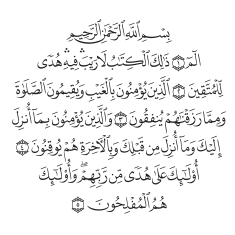
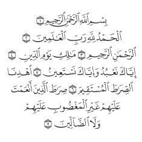
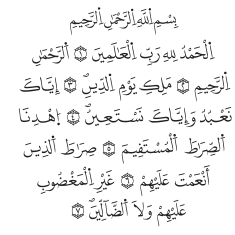
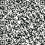
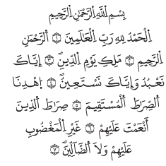
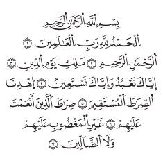
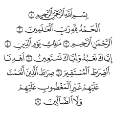

مصحف حقيقي لا نصّ مُعاد التشكيل
الصفحة هي صفحة الناشر نفسها، بخطّها ومواضع كلماتها ونهاياتها. ما حفظه الطالب بصريًّا يبقى كما هو.
بمناسبة اليوم العالمي للسرد القرآني
صفحة المصحف كما هي في الطبعة التي تحفظ منها، وثلاث ضغطات تكفي لتسجيل ما مرّ في السرد. ليست صفحة قرآن إلكترونية أخرى — أداة صُنعت للسرد والمراجعة وحدهما.

٣٠ أغسطس ٢٠٢٦ ١٧ ربيع الأول ١٤٤٨هـ
أداة السرد القرآني من تجويدوو متاحة مجانًا للجميع، لتجربة أكثر تركيزًا وتنظيمًا في مراجعة كتاب الله.
لماذا هذه الأداة
الصفحة هي صفحة الناشر نفسها، بخطّها ومواضع كلماتها ونهاياتها. ما حفظه الطالب بصريًّا يبقى كما هو.
حفص وورش وقالون والدوري وشعبة، وكل رواية بترقيم آياتها هي — لا يُنقل رقم رواية إلى أخرى.
نقرة على الآية تُثبِّت الموضع وتُبرزها، فالملاحظة تُسجَّل عند موضعها بالضبط دون مقاطعة السرد.
موضع السرد وملاحظاته محفوظة أوّلًا بأوّل، والمجلس ينجو من إغلاق الجهاز أو إعادة التحميل.
سحب طبيعي بالإصبع كما تُقلَّب ورقة المصحف، مضبوط للجوال واللوحي والشاشات التفاعلية.
حين تفتح آخر صفحة للسورة يظهر زرّ إنهائها — عند آخر آية فيها بعدّ طبعتك أنت.
أثناء السرد
تردّد · خطأ حفظ · تنبيه تجويد. ضغطة واحدة تُثبِّت الملاحظة عند الآية التي وقف عندها الطالب — بلا أن يتوقّف، وبلا أن يخرج المعلّم من الصفحة.

عند آخر آية
حين تفتح آخر صفحة للسورة يظهر الزرّ — عند آخر آية فيها بعدّ طبعتك أنت، لا بعدّ رواية أخرى. لا انتظار، ولا إنهاء تلقائي يسبق الطالب.

بعد المجلس
يخرج وحده بمجرّد إنهاء المجلس: ما سُرِد، ومن أين إلى أين، وبأي مصحف، وفي كم — وكل ملاحظة عند آيتها. جاهز للحفظ أو الإرسال لوليّ الأمر.
اللَّهُمَّ اجْعَلِ الْقُرْآنَ الْعَظِيمَ رَبِيعَ قُلُوبِنَا
 التطبيق على الجوال
التطبيق على الجوال
المصحف بخمس روايات، وتسجيل الملاحظات بثلاث ضغطات، والتقرير والشهادة في آخر المجلس — كلّه في تطبيق واحد يفتح بلا إنترنت.
ولمن على الحاسب أو اللوحي: الأداة نفسها تعمل كاملةً من المتصفّح بلا تحميل، وتُثبَّت على الشاشة الرئيسية إن أردت.
التطبيق على آيفون
نفس المصحف بخمس روايات، ونفس الثلاث ضغطات — وفي آخر المجلس يخرج التقرير وحده، جاهزًا للحفظ أو الإرسال.
اللَّهُمَّ اجْعَلِ الْقُرْآنَ الْعَظِيمَ رَبِيعَ قُلُوبِنَا
مخرَج المجلس
تُصدَر بضغطة بعد إنهاء المجلس، صورةً جاهزة للإرسال أو الطباعة — تقول ما سُرِد بأقرب جزء، وعلى مَن، وفي كم.
 ٣٠ أغسطس ٢٠٢٦ ميلادي
١٧ ربيع الأول ١٤٤٨ هجري
نشهد أنّ القارئ
عبد الرحمن
قد سَرَدَ ٥ أجزاء من القرآن الكريم على المقرئ الشيخ محمود
٣٠ أغسطس ٢٠٢٦ ميلادي
١٧ ربيع الأول ١٤٤٨ هجري
نشهد أنّ القارئ
عبد الرحمن
قد سَرَدَ ٥ أجزاء من القرآن الكريم على المقرئ الشيخ محمود
اللَّهُمَّ اجْعَلِ الْقُرْآنَ الْعَظِيمَ رَبِيعَ قُلُوبِنَا،
وَنُورَ صُدُورِنَا، وَجِلَاءَ أَحْزَانِنَا، وَذَهَابَ هُمُومِنَا

امسح لعرض توثيق الشهادةالاستعمال
خمس روايات، ثم الطبعة. تُثبَّت طوال المجلس فلا يتغيّر الشكل تحت عين الحافظ.
واكتب اسم الطالب، ويبدأ المجلس عند الآية التي تريدها بالضبط.
قلّب الصفحات باللمس، وسجّل ما يمرّ، وأنهِ السورة حين تريد — ويخرج التقرير وحده.
المصاحف
كل رواية مأخوذة من طبعتها هي، وبترقيم آياتها هي. هذه الصفحة الأولى نفسها في الخمس — انظر كيف تختلف.
٦٢٣٦ آية · العدّ الكوفي
٦٢١٤ آية · العدّ المدني

٦٢١٤ آية · العدّ المدني

٦٢١٨ آية · عدّ مصحفه

٦٢٣٦ آية · العدّ الكوفي
الخمس من مصحف المدينة النبوية — مجمّع الملك فهد لطباعة المصحف الشريف، ٦٠٤ صفحات لكل مصحف.
الفرق
تطبيقات القرآن كثيرة، لكنها مصنوعة للقراءة والتلاوة والبحث. مجلس السرد شيء آخر: طالب يقرأ من حفظه، ومعلّم يسمع ولا يقاطع، ووقت محدود.
هذه ليست مزايا أُضيفت إلى تطبيق قراءة — هي سبب وجود الأداة.
قبل أن تبدأ
نعم، مجانية بالكامل: بلا بطاقة، ولا اشتراك، ولا مدّة تنتهي.
لا. تفتح الأداة وتبدأ المجلس مباشرة، والجلسة محفوظة على جهازك.
نعم، على Google Play لأجهزة أندرويد وعلى App Store لآيفون وآيباد — وفي الحالين تعمل الأداة نفسها كاملةً من المتصفّح بلا تحميل.
نعم. بعد فتحها أوّل مرّة يعمل المجلس كاملًا بلا شبكة، وصفحات المصحف التي فُتحت تبقى متاحة.
الصفحة معروضة كما أخرجها الناشر — مواضع الكلمات ونهايات الصفحات كما في المطبوع، لا نصّ يُعاد رصفه على الشاشة.
خمس روايات متاحة الآن: حفص وورش وقالون والدوري وشعبة. وما بعدها يدخل بالمسار نفسه ولا يدخل قبله: طبعة من ناشر معروف، وترخيص يسمح بالاستعمال، وترقيم مستخرَج من الطبعة نفسها لا منقول من رواية أخرى.
نعم. كل مجلس يخرج بتقرير باسم الطالب وما مرّ فيه، ويمكن حفظه صورةً أو إرساله.
المتصفّح على الجوال واللوحي والحاسب والشاشات التفاعلية، مع تقليب باللمس على الأجهزة اللمسية — وتطبيق أندرويد على Google Play.
جرّبها في مجلس واحد، وسترى الفرق في التقرير. مجانية بالكامل — بلا حساب، ولا اشتراك، ولا مدّة تنتهي.